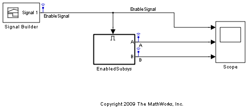
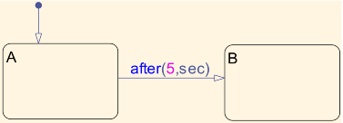
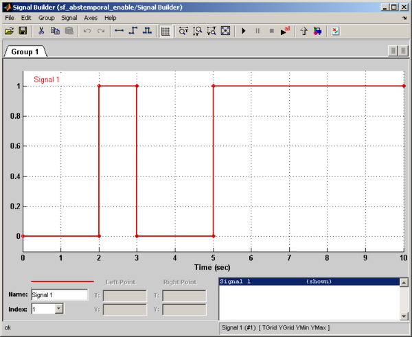
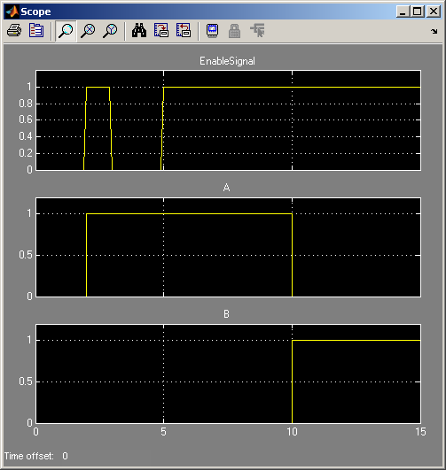

Enabled Subsytem に存在する絶対時間の時相論理
このモデルでは、Enabled Subsytem に存在する絶対時間の時相論理の動作を説明します。
モデルには、単一のチャート Chart を含んでいる Enabled Subsytem (EnabledSubsys) があります。初期設定で Enable 端子 EnabledSubsys/Enable のオプション [イネーブル時の状態] は [保持] に設定されています。

チャートそのものは非常に単純です。チャートは、A から B への遷移が after(5,sec) によって管理される A と B の 2 つのステートで構成されます。
EnabledSubsys を駆動する信号は、以下のようになります。
モデルをシミュレートすると、次の出力が表示されます。

t = 2 で A に入った場合でも、A から B への遷移は t = 7 ではなく t = 9 で行われることに注意してください。ここでは、Enabled Subsytem に存在する絶対時間の時相論理の重要なセマンティクスの規則を説明します。具体的には、チャートが無効になっていれば、チャートがその時点でアクティブなステートになっているときに経過する時間が累積され続けることはありません。
Enable 端子 EnabledSubsys/Enable のオプション [イネーブル時の状態] を [リセット] に変更してシミュレーションを再度実行すると、次のように動作します。
ここでは A から B への遷移が t = 10 で発生することに注意してください。これは、Enabled Subsystem を再び有効にすると Stateflow® が t = 5 で「再開」するためです。つまり、Stateflow® は既定の遷移を実行し、すべての時間カウンターをリセットして t = 2 で行われたその他のすべての初期化を実行します。したがって、t = 5 の後もさらに 5 秒間は A に留まります。
詳細は、条件付き実行サブシステムでの絶対時間の時相論理の使用の節を参照してください。